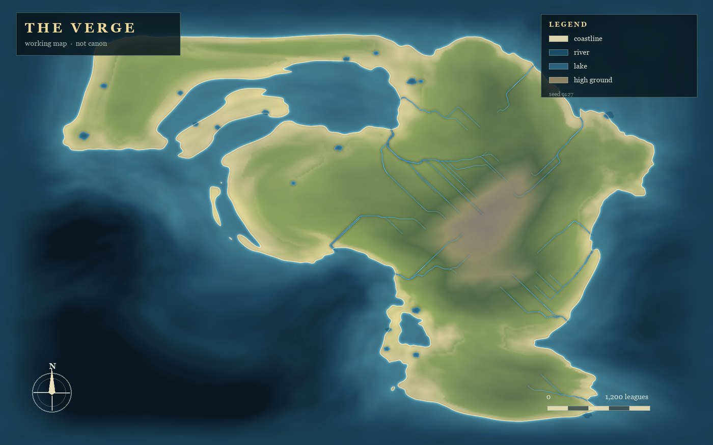

Map Notes
The Continent — map notes

Working terrain map. Not canon — the geography is a placeholder until the political layer is settled.
How it was made
Procedural, from a seed. One command regenerates it identically.
| Step | Script | What it does |
|---|---|---|
| 1 | gen_height2.py | OpenSimplex fBm heightfield + domain warping + hard border mask |
| 2 | raster_map2.py | Biome colouring, hillshade, river routing, lakes |
| 3 | finish_map2.py | Brightness, vignette, compass, legend, scale bar |
Scripts live in the Hermes scratch dir. Seed 9127. Change the seed for a different continent; change SHAPE to make land more or less island-like.
Requirements installed in ~/AppData/Local/hermes/docenv: opensimplex, shapely, numpy, pillow.
Known flaws of this render
Be honest about these — they are all fixable, and none of them matter until the geography is final:
- Rivers are too straight and parallel in the east. Steepest-descent routing on a smooth heightfield produces canals, not meanders. Fix: add erosion, or route along a fine noise-perturbed gradient with a penalty for direction changes.
- High ground is a diffuse wash, not distinct ridges. The ridge transform is present but the spine is too broad. Fix: narrow the Gaussian band and raise
ridgedamplitude. - Coastline stroke is thick and uniform — a bright halo rather than a varied shore. Fix: modulate width by a noise field so headlands are crisper than bays.
- No biome variety beyond elevation and one moisture field. No forest density, no marsh, no sand seas.
- Unlabelled. The bay in the north-west is called the Cael's mouth in The Continent but is not marked here.
What must be decided before the map is redrawn properly
From The Continent:
1. **Where does the Register physically live?** → decides where the political centre sits.
2. **Do the Hanging Isles drift during the story?** → if yes, this map needs a second state.
3. **Is there a second continent?** → the frame is currently one landmass plus islands.Once those are answered, this becomes a finished artefact rather than a working sketch. Right now it exists so you can see the Republic's smallness against the Central Kingdom and the Lahir Empire — which is the one thing it already communicates correctly.